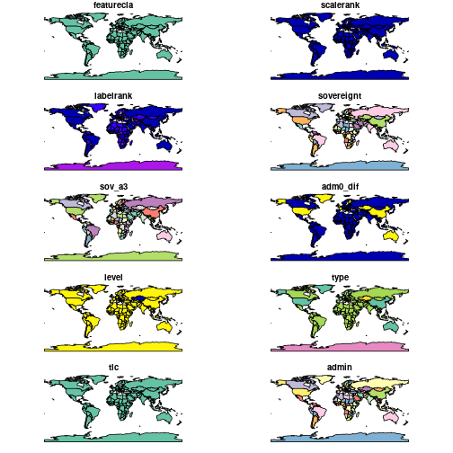
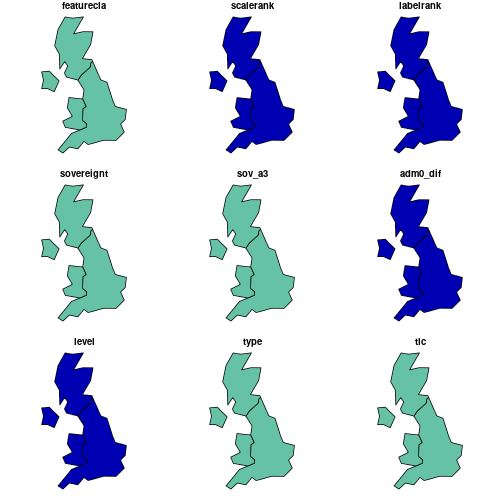
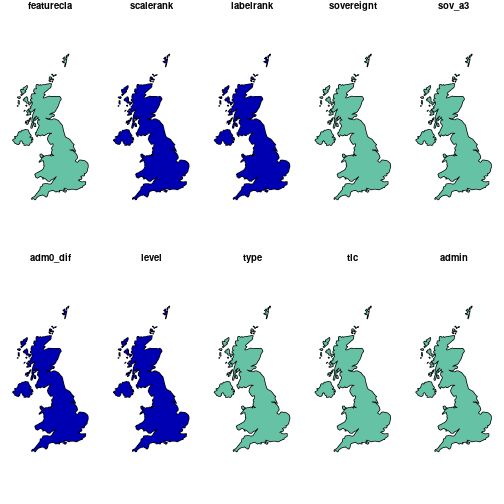
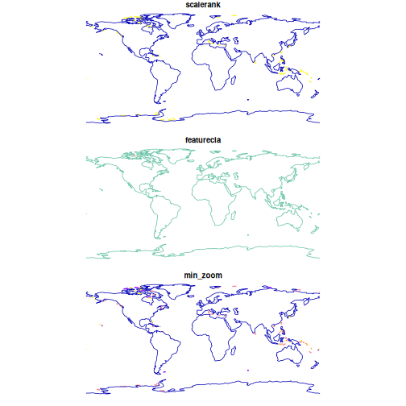

This vignette is an introduction to rnaturalearth, an R
package to hold and facilitate interaction with natural earth vector map
data. rnaturalearth is a data package designed to provide
map data that can be visualised using other R packages.
Natural Earth is a public domain map dataset including vector country and other administrative boundaries.
rnaturalearth does two main things.
- Contains pre-downloaded vector maps for :
- countries
ne_countries() - states
ne_states() - coastline
ne_coastline()
- countries
- Has
ne_download()function to facilitate download of other vector and raster maps.
This vignette uses plot as a simple, quick way to show
how different data can be accessed.rnaturalearth is
designed to provide data allowing creation of more elaborate maps in
other visualisation packages (e.g. ggplot2,
tmap and choroplethr).
Maps in the package.
Pre-downloaded maps can be accessed with :
-
ne_countries()for country (admin-0) boundaries -
ne_states()for boundaries within countries (admin-1) -
ne_coastline()for world coastline
# world at small scale (low resolution)
plot(ne_countries(type = "countries", scale = "small"))
#> Warning: plotting the first 10 out of 168 attributes; use
#> max.plot = 168 to plot all
# countries, UK undivided
plot(ne_countries(country = "united kingdom", type = "countries"))
#> Warning: plotting the first 9 out of 168 attributes; use
#> max.plot = 168 to plot all
# map_units, UK divided into England, Scotland, Wales and Northern Ireland
plot(ne_countries(country = "united kingdom", type = "map_units"))
#> Warning: plotting the first 9 out of 168 attributes; use
#> max.plot = 168 to plot all
# countries, small scale
plot(ne_countries(country = "united kingdom", scale = "small"))
#> Warning: plotting the first 9 out of 168 attributes; use
#> max.plot = 168 to plot all
# countries, medium scale
plot(ne_countries(country = "united kingdom", scale = "medium"))
#> Warning: plotting the first 10 out of 168 attributes; use
#> max.plot = 168 to plot all
# not evaluated because rely on rnaturalearthhires data which are on rOpenSci so CRAN check likely to fail
# countries, large scale
plot(ne_countries(country = "united kingdom", scale = "large"))
# states country='united kingdom'
plot(ne_states(country = "united kingdom"))
# states geounit='england'
plot(ne_states(geounit = "england"))
# states country='france'
plot(ne_states(country = "france"))
# coastline of the world
# subsetting of coastline is not possible because the Natural Earth data are not attributed in that way
plot(ne_coastline())
Downloading other Natural Earth vectors with ne_download().
Each Natural Earth
dataset is characterised on the website according to scale,
type and category. rnaturalearth
allows you to specify scale, type and
category and will construct the url and download the
corresponding file.
# lakes
lakes110 <- ne_download(scale = 110, type = "lakes", category = "physical")
plot(lakes110, col = "blue")
# rivers
rivers110 <- ne_download(scale = 110, type = "rivers_lake_centerlines", category = "physical")
plot(rivers110, col = "blue")Tables of vector layers available via
ne_download(type=[layer_name], scale=)
1=available, 0=not
| layer | scale10 | scale50 | scale110 |
|---|---|---|---|
| antarctic_ice_shelves_lines | 1 | 1 | 0 |
| antarctic_ice_shelves_polys | 1 | 1 | 0 |
| coastline | 1 | 1 | 1 |
| geographic_lines | 1 | 1 | 1 |
| geography_marine_polys | 1 | 1 | 1 |
| geography_regions_elevation_points | 1 | 1 | 1 |
| geography_regions_points | 1 | 1 | 1 |
| geography_regions_polys | 1 | 1 | 1 |
| glaciated_areas | 1 | 1 | 1 |
| lakes | 1 | 1 | 1 |
| lakes_europe | 1 | 0 | 0 |
| lakes_historic | 1 | 1 | 0 |
| lakes_north_america | 1 | 0 | 0 |
| lakes_pluvial | 1 | 0 | 0 |
| land | 1 | 1 | 1 |
| land_ocean_label_points | 1 | 0 | 0 |
| land_ocean_seams | 1 | 0 | 0 |
| land_scale_rank | 1 | 0 | 0 |
| minor_islands | 1 | 0 | 0 |
| minor_islands_coastline | 1 | 0 | 0 |
| minor_islands_label_points | 1 | 0 | 0 |
| ocean | 1 | 1 | 1 |
| ocean_scale_rank | 1 | 0 | 0 |
| playas | 1 | 1 | 0 |
| reefs | 1 | 0 | 0 |
| rivers_europe | 1 | 0 | 0 |
| rivers_lake_centerlines | 1 | 1 | 1 |
| rivers_lake_centerlines_scale_rank | 1 | 1 | 0 |
| rivers_north_america | 1 | 0 | 0 |
| layer | scale10 | scale50 | scale110 |
|---|---|---|---|
| admin_0_antarctic_claim_limit_lines | 1 | 0 | 0 |
| admin_0_antarctic_claims | 1 | 0 | 0 |
| admin_0_boundary_lines_disputed_areas | 1 | 1 | 0 |
| admin_0_boundary_lines_land | 1 | 1 | 1 |
| admin_0_boundary_lines_map_units | 1 | 0 | 0 |
| admin_0_boundary_lines_maritime_indicator | 1 | 1 | 0 |
| admin_0_boundary_map_units | 0 | 1 | 0 |
| admin_0_breakaway_disputed_areas | 0 | 1 | 0 |
| admin_0_countries | 1 | 1 | 1 |
| admin_0_countries_lakes | 1 | 1 | 1 |
| admin_0_disputed_areas | 1 | 0 | 0 |
| admin_0_disputed_areas_scale_rank_minor_islands | 1 | 0 | 0 |
| admin_0_label_points | 1 | 0 | 0 |
| admin_0_map_subunits | 1 | 1 | 0 |
| admin_0_map_units | 1 | 1 | 1 |
| admin_0_pacific_groupings | 1 | 1 | 1 |
| admin_0_scale_rank | 1 | 1 | 1 |
| admin_0_scale_rank_minor_islands | 1 | 0 | 0 |
| admin_0_seams | 1 | 0 | 0 |
| admin_0_sovereignty | 1 | 1 | 1 |
| admin_0_tiny_countries | 0 | 1 | 1 |
| admin_0_tiny_countries_scale_rank | 0 | 1 | 0 |
| admin_1_label_points | 1 | 0 | 0 |
| admin_1_seams | 1 | 0 | 0 |
| admin_1_states_provinces | 1 | 1 | 1 |
| admin_1_states_provinces_lakes | 1 | 1 | 1 |
| admin_1_states_provinces_lines | 1 | 1 | 1 |
| admin_1_states_provinces_scale_rank | 1 | 1 | 1 |
| airports | 1 | 1 | 0 |
| parks_and_protected_lands_area | 1 | 0 | 0 |
| parks_and_protected_lands_line | 1 | 0 | 0 |
| parks_and_protected_lands_point | 1 | 0 | 0 |
| parks_and_protected_lands_scale_rank | 1 | 0 | 0 |
| populated_places | 1 | 1 | 1 |
| populated_places_simple | 1 | 1 | 1 |
| ports | 1 | 1 | 0 |
| railroads | 1 | 0 | 0 |
| railroads_north_america | 1 | 0 | 0 |
| roads | 1 | 0 | 0 |
| roads_north_america | 1 | 0 | 0 |
| time_zones | 1 | 0 | 0 |
| urban_areas | 1 | 1 | 0 |
| urban_areas_landscan | 1 | 0 | 0 |